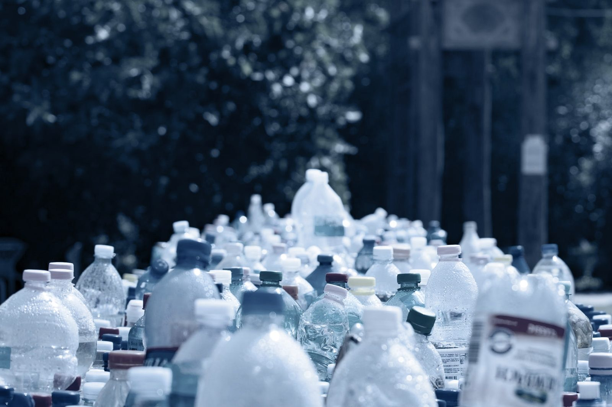
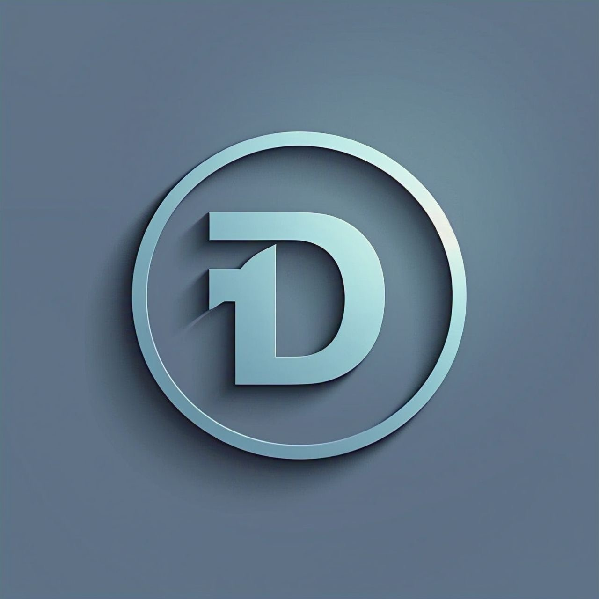
Penyedia infrastruktur pengelolaan air dan limbah yang berkedudukan di Surakarta. Perusahaan menangani perancangan, pengadaan, pemasangan, dan pemeliharaan sistem teknik untuk kebutuhan industri dan bangunan komersial.
Perusahaan melakukan riset dan perancangan teknologi pemurnian garam. Sebagian besar tenaga ahli berasal dari lembaga riset dan pengembangan teknologi garam terkemuka, dengan kerja sama bersama produsen teknologi pemurnian garam berskala global.
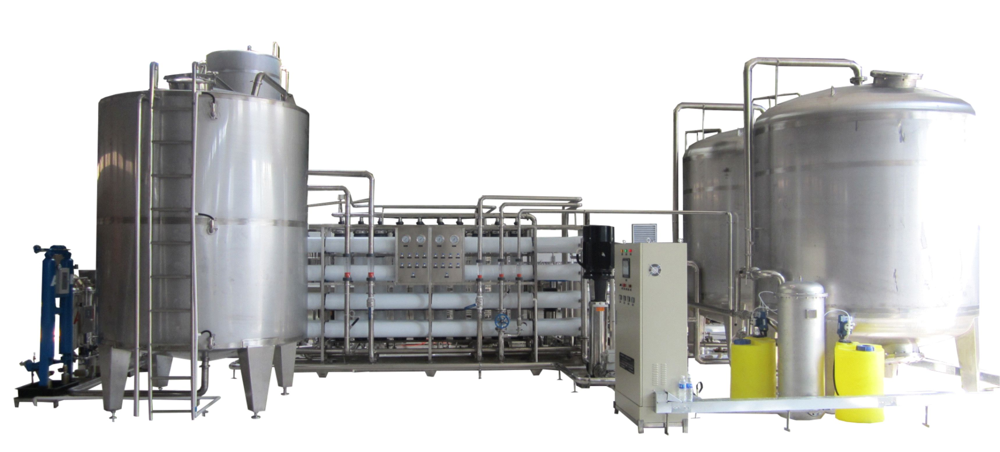
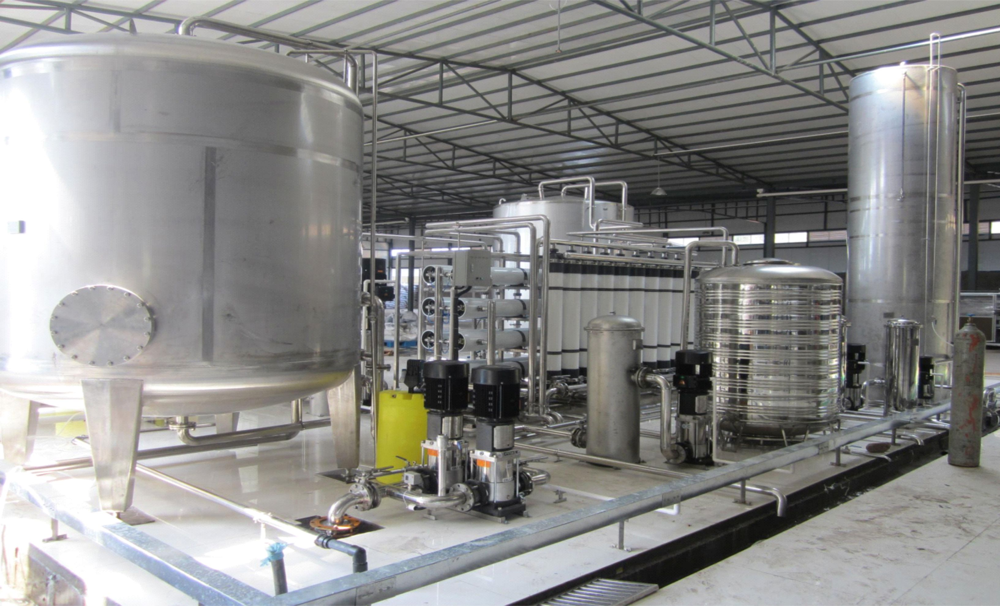
Elektrikal, plambing dan pemadam kebakaran, HVAC, serta sistem komunikasi dan keamanan.
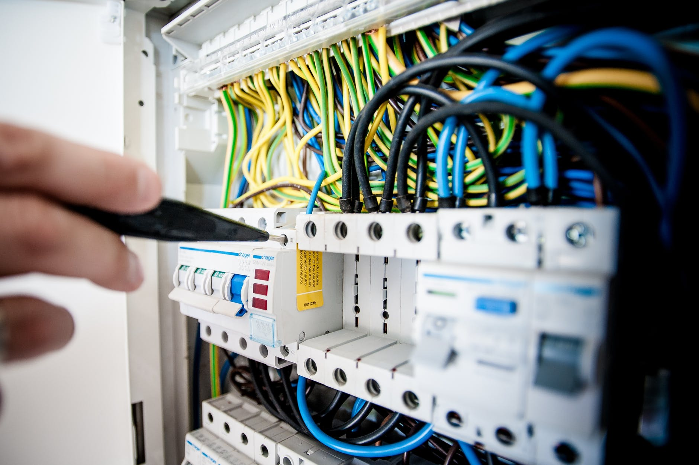
Perancangan, pembangunan, dan pemeliharaan infrastruktur kelistrikan data center.
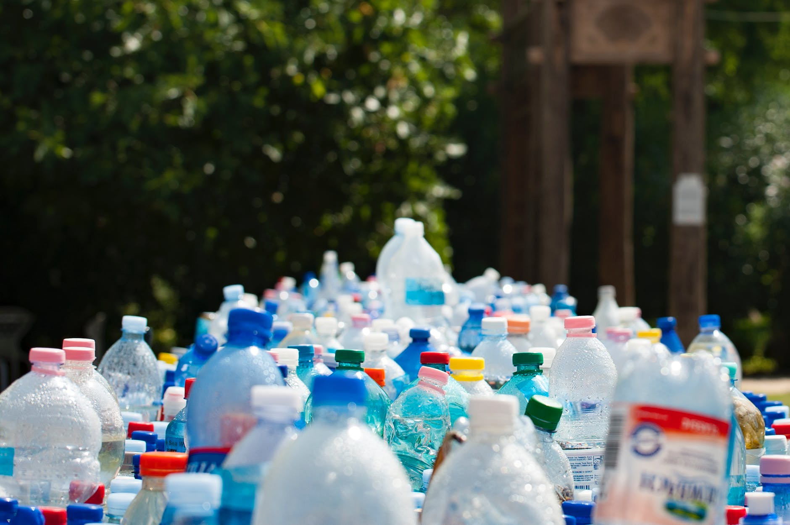
IPAL, sistem pemurnian air deionisasi, dan desalinasi air payau serta air laut.
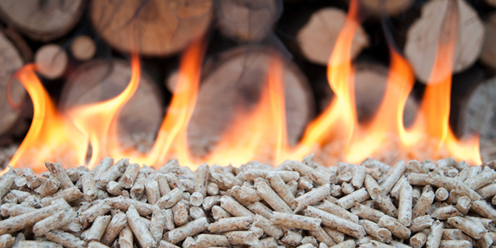
Energi biomassa, produksi wood pellet, dan pengolahan sampah menjadi energi.
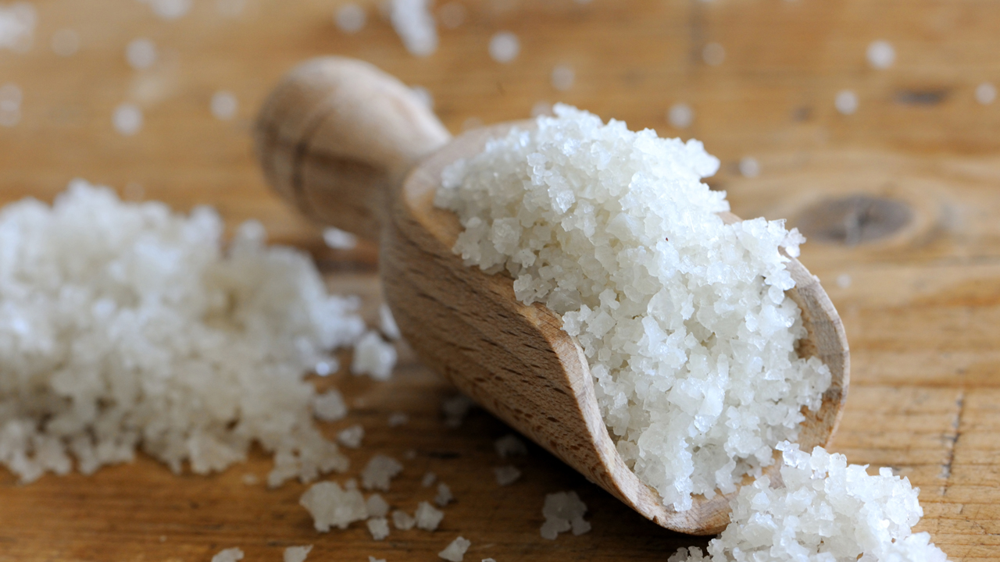
Plant pengolahan garam lengkap, meliputi evaporasi dan kristalisasi vakum maupun MVR, refinery mekanis, coarse salt upgrading, flake salt, garam blok ternak, bath salt, tablet pelunak air, sampai lini pengemasan otomatis.
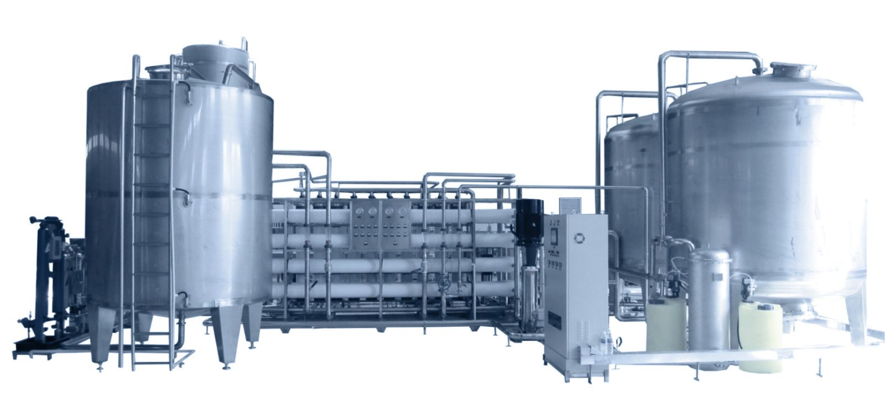
Perancangan, pengadaan, pemasangan, pengujian, dan commissioning sistem bangunan. Solusi satu pintu untuk hunian, perkantoran, pabrik, serta fasilitas komersial dan publik.
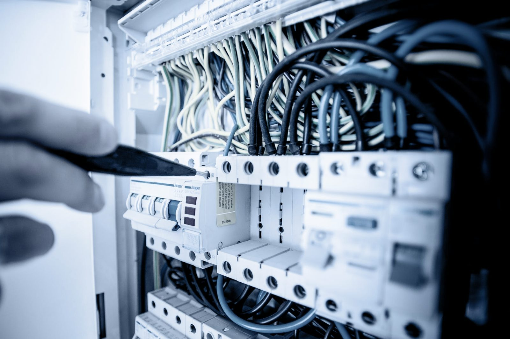
Infrastruktur data center bersifat mission critical. Keandalan daya menjadi fondasi utama, karena seluruh perangkat komputasi, pendingin, dan keamanan bergantung pada pasokan listrik yang tidak boleh terputus.
Infrastruktur kelistrikan data center disusun berlapis. Sumber daya utama ditopang sumber cadangan, distribusi diatur agar setiap beban terlindungi, dan kondisi tiap komponen dipantau berkelanjutan.
| Komponen | Fungsi dalam Sistem |
|---|---|
| Panel Listrik | Enklosur pelat logam berisi komponen kelistrikan, konfigurasi tiga fasa dengan magnetic contactor pengendali aliran arus |
| Generator Set | Mengubah energi kinetik diesel atau bensin menjadi tenaga listrik sebagai sumber daya cadangan |
| Transformator | Mengubah tingkat tegangan arus bolak balik melalui belitan primer dan sekunder |
| Cubicle | Distribusi, pengukuran, dan proteksi rangkaian melalui bagian incoming, metering, dan outgoing |
| Kabel Daya | Penghantar tembaga atau aluminium berlapis isolasi dan selubung pelindung |
| UPS | Cadangan daya baterai dan pengondisian daya, melindungi dari pemadaman, lonjakan, dan penurunan tegangan |
| Battery Monitoring System | Memantau tegangan, arus, suhu, State of Charge, dan State of Health baterai |
Satu titik kegagalan daya dapat menghentikan seluruh layanan. UPS menjaga kesinambungan pada detik peralihan, generator set menopang beban pada pemadaman panjang, dan battery monitoring system memastikan cadangan benar benar siap saat dibutuhkan.
Inspeksi rutin, pemantauan, dan servis berkala terhadap infrastruktur teknologi informasi maupun fasilitas, mencakup sistem pendingin, kelistrikan, perangkat server, dan sistem keamanan.
Perawatan terjadwal pada interval tetap. Pembersihan, penggantian komponen habis pakai, pengencangan sambungan, dan pemeriksaan parameter operasi.
Berpijak pada data kondisi aktual. Suhu, arus, tegangan, dan State of Health baterai dipakai memperkirakan kapan komponen mendekati batas kemampuan.
Prioritas perawatan berdasarkan kekritisan komponen. Perangkat dengan dampak kegagalan terbesar mendapat frekuensi pemeriksaan lebih tinggi.
Mengubah air yang tidak lagi layak digunakan menjadi air yang aman dikembalikan ke lingkungan, serta mengolah air laut dan air payau menjadi air layak minum.
Memanfaatkan materi biologis dan bakteri untuk menguraikan zat pencemar. Sesuai untuk air limbah rumah tangga dan bangunan usaha.
Memanfaatkan reaksi kimia dan proses fisika. Untuk air limbah industri dan manufaktur yang mengandung bahan kimia serta zat beracun.
Sistem reverse osmosis dengan perbaikan rasa, penyesuaian pH, dan prapengolahan. Menyisihkan garam anorganik, ion logam berat, bahan organik, serta bakteri.
| Spesifikasi | Keterangan |
|---|---|
| Kemampuan Olah | Air laut sampai 40.000 ppm menjadi air tawar di bawah 700 ppm |
| Mutu Air Hasil | Memenuhi standar air minum GB5749-2006 |
| Daya | 220V dan 380V per 50 atau 60 Hz, dapat disesuaikan |
| Proteksi Tekanan | Berhenti otomatis di atas 6,5 MPa dan di bawah 0,05 MPa |
| Umur Rancangan | 10 tahun |
| Tipe Kontainer | Ukuran 20, 30, dan 40 kaki |
| Penerapan | Kepulauan, kapal, perikanan, wilayah pesisir kekurangan air |
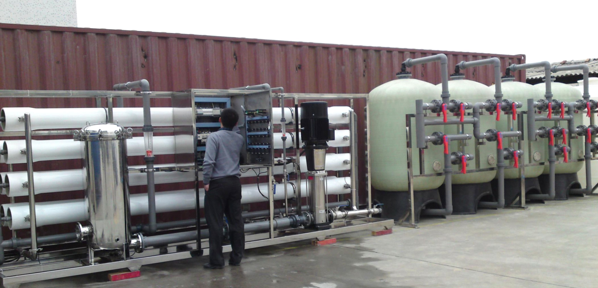
Bahan bakar dari bahan organik. Dibakar menghasilkan uap penggerak turbin listrik, atau panas untuk pemanas ruangan dan air. Emisinya jauh lebih rendah dari batu bara dan minyak, dengan efisiensi boiler setara boiler konvensional.
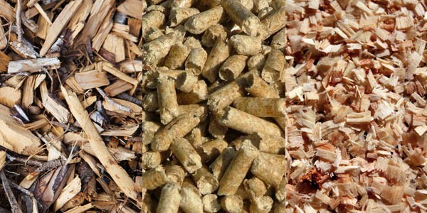
Bahan bakar padat dari limbah kayu, serbuk gergaji, dan sisa kehutanan. Panjang 1 sampai 2 sentimeter, diameter 6, 8, 10, atau 12 milimeter. Tanpa bahan pengikat tambahan karena lignin berperan sebagai pengikat.
Pengelolaan sampah padat perkotaan merupakan salah satu persoalan kota paling menantang di Indonesia. Diperkirakan hanya 60 sampai 70 persen timbulan sampah yang terangkut ke tempat pembuangan akhir, sisanya ditangani sendiri oleh masyarakat atau tersebar di berbagai titik kota.
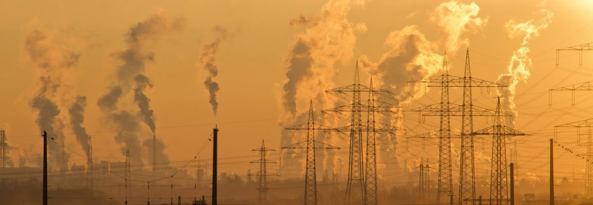
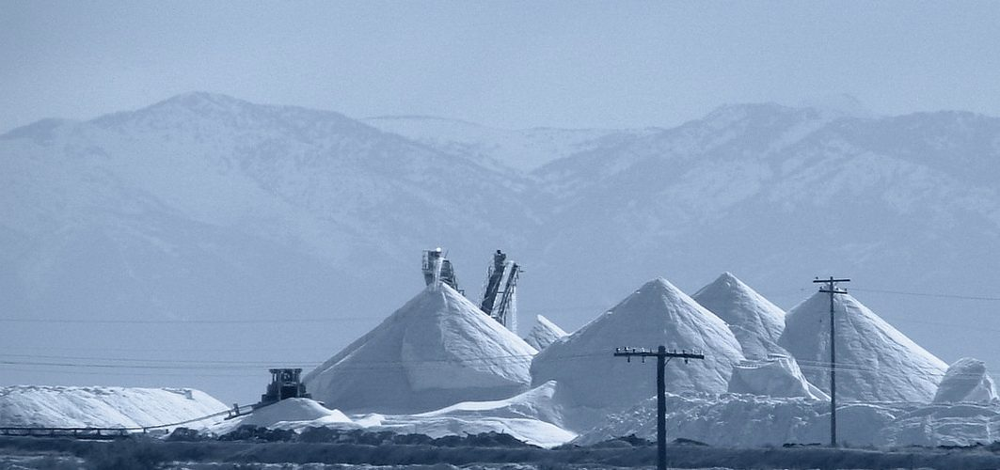
Rangkaian plant pengolahan garam secara lengkap, mencakup evaporasi dan kristalisasi, refinery mekanis, upgrading, plant produksi, serta lini pengemasan otomatis.
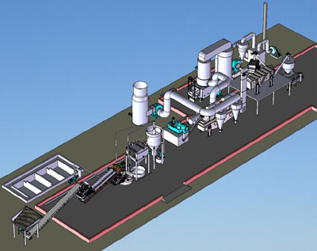
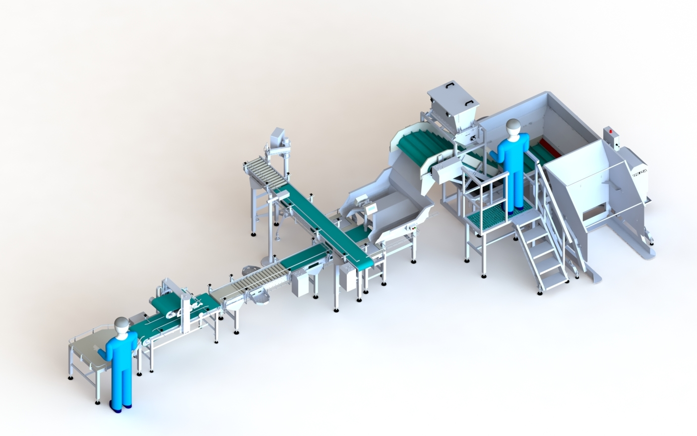
| Plant | Kapasitas | Material dan Kendali | Kirim |
|---|---|---|---|
| Vacuum Salt Plant | 1 sampai 100 TPH | Titanium dan SS316L, DCS | 5 sampai 8 bulan |
| MVR Evaporating Plant | 1 sampai 80 TPH | Titanium dan SS316L, DCS | 5 sampai 8 bulan |
| Mechanical Salt Refinery | 1 sampai 30 TPH | SS316L, Cabinet atau PLC | 3 sampai 5 bulan |
| Coarse Salt Upgrading | 5 TPH sampai sesuai kebutuhan | SS316L | 5 bulan |
| Flake Salt Refining | 500 kilogram sampai 5 TPD | SS316L, Cabinet atau PLC | 3 sampai 5 bulan |
| Livestock Salt Bricks | Blok 5 dan 10 kilogram, 3 sampai 4 per menit | SS316L dan Q235 antikorosi | 2 bulan |
| Bath Salt Making | Sesuai kebutuhan | SS316L | 2 bulan |
| Water Softener Tablet | Sesuai kebutuhan | SS316L | 2 bulan |
Seluruh plant disertai garansi 1 tahun dan layanan 24 jam setiap hari sepanjang minggu. Proses berjalan kontinu.
Sistem multiple effect memanfaatkan uap sekunder antar tahap untuk menghemat energi. Sistem MVR mengompresi ulang uap sehingga tidak memerlukan uap segar setelah penyalaan awal, dan cukup satu tahap evaporasi sehingga menghemat lahan serta ruang boiler.
Roller pulverizer memotong butiran agar pengotor terpapar, dipadukan screw washing, stirring washing, dan elutriating counter current washing. Hasil akhir kering, putih, mengilap, dan mudah mengalir.
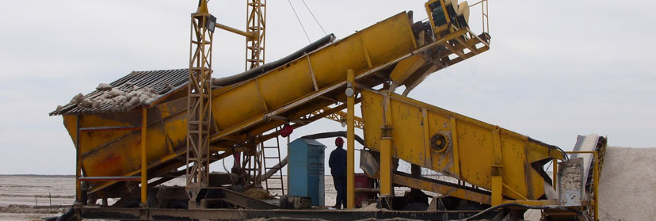
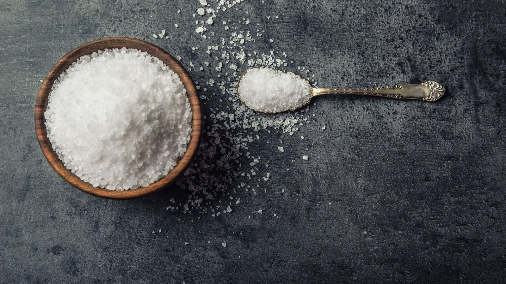
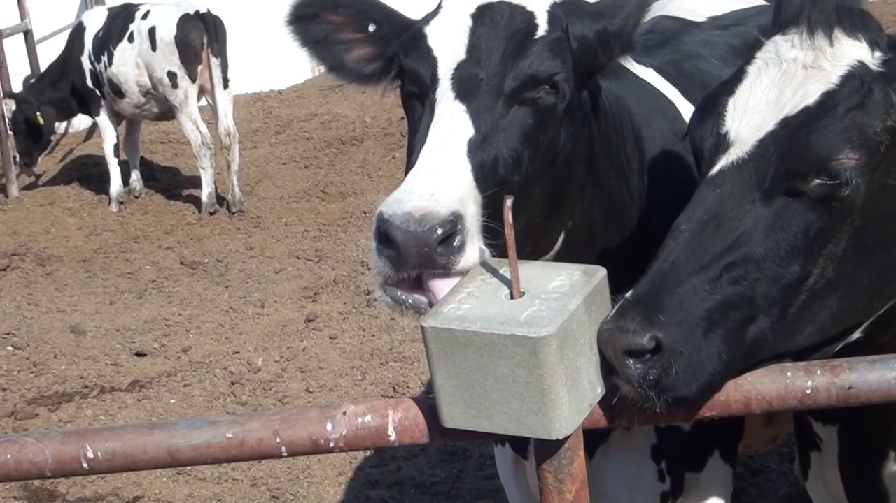
Jl. A. Yani No. 285B
Manahan, Kec. Banjarsari
Kota Surakarta
Jawa Tengah 57139
+62 812-8494-0076
Sales 1
+62 821-2343-8144
Sales 2
daam.co.id
Dukungan teknis 24 jam setiap hari sepanjang minggu.
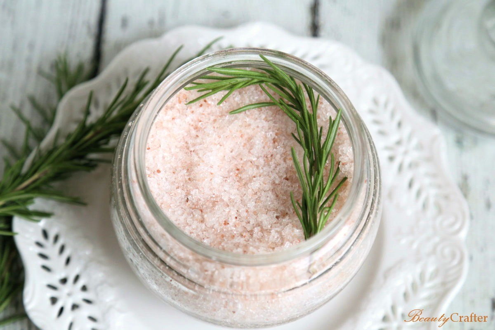
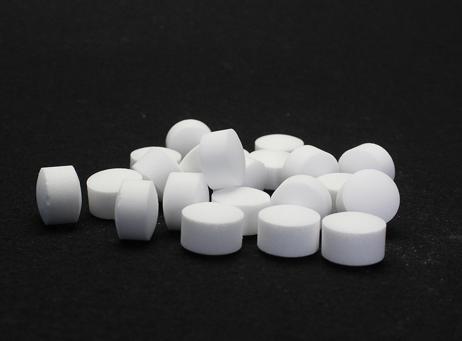
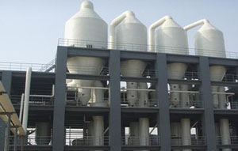
PT Dwipa Anugrah Alam Mandiri
Waste and Water Management Infrastructure